Primary suite
Opens straight onto the terrace, with built-in cabinetry, mirrored wardrobe and a travertine bath with jetted tub and glass shower.

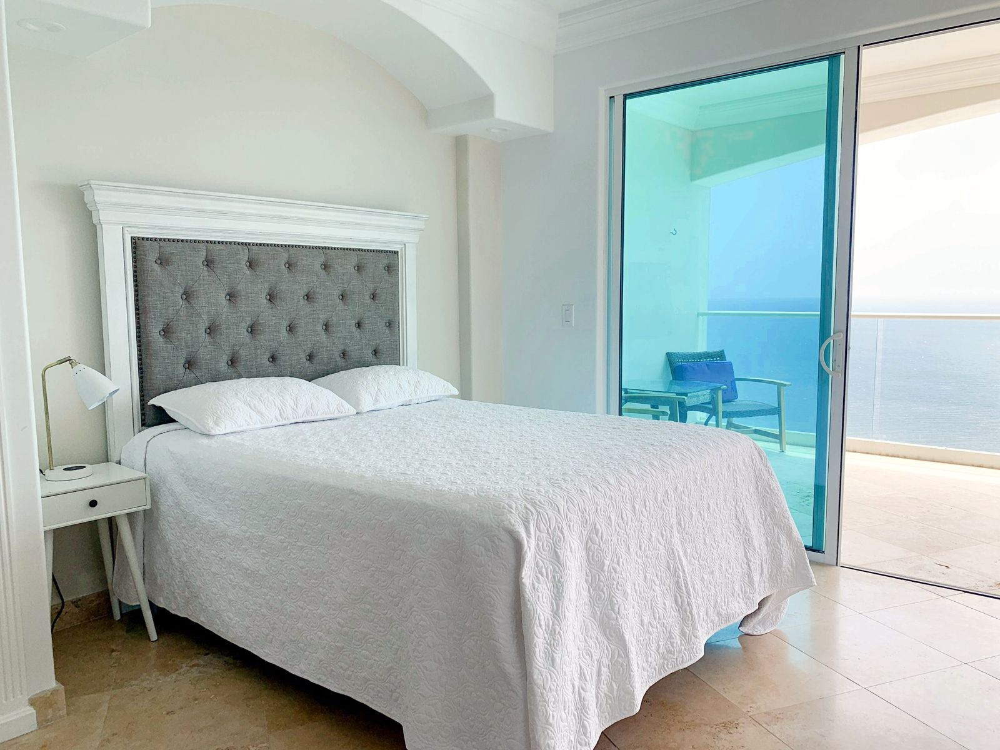


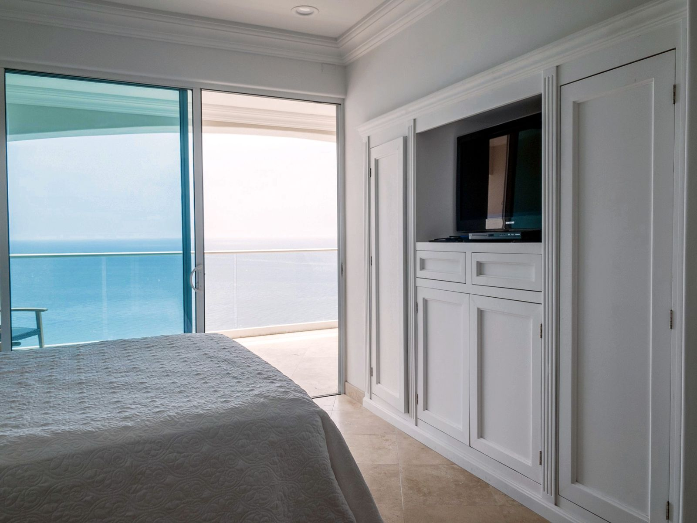

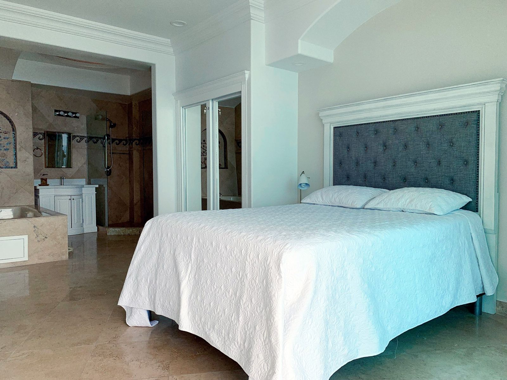

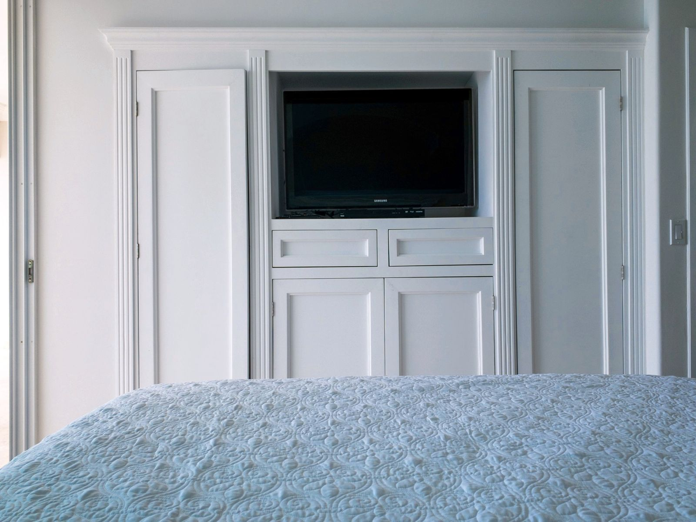


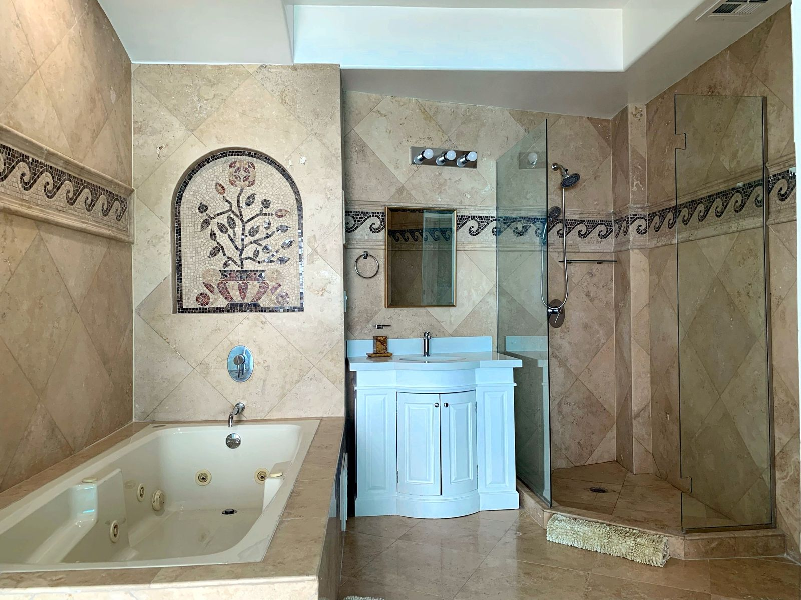


An open great room, a white kitchen, two bedroom suites that both open to the ocean terrace, and travertine throughout.
An open great room with a wall of sliding glass doors, so the ocean is in view from the sofa and the dining table.


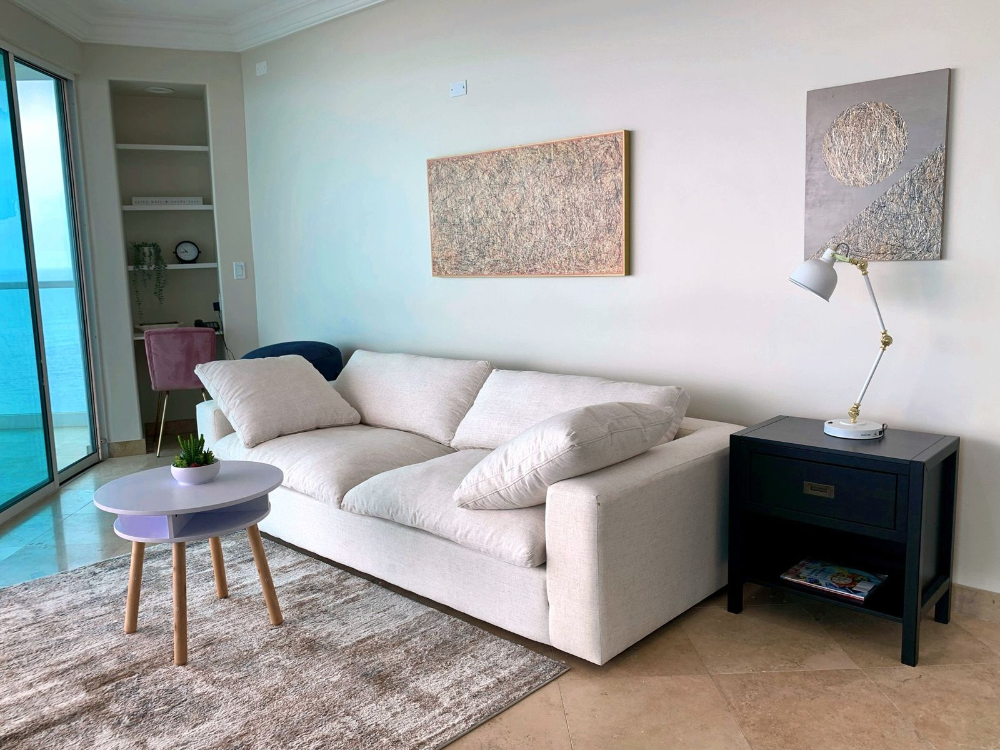
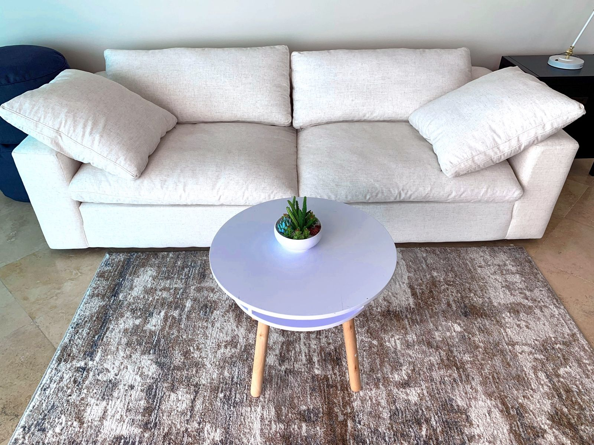
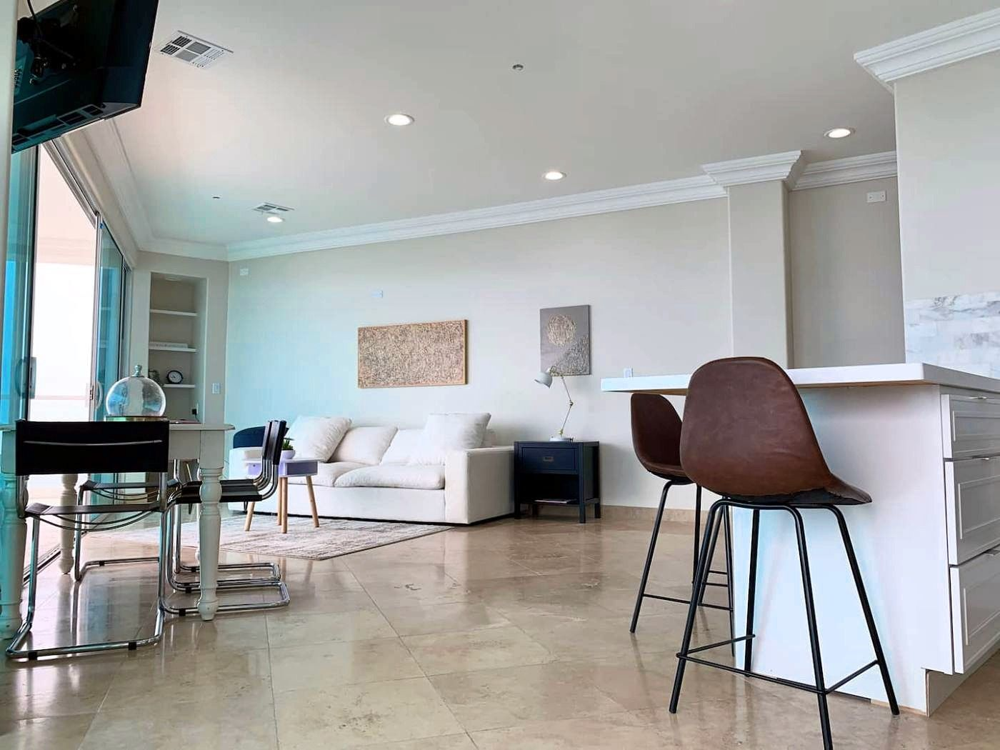


White shaker cabinetry, quartz counters and marble subway backsplash, with a breakfast bar for four, stainless French-door refrigerator, induction cooktop, pot filler and dishwasher.


Opens straight onto the terrace, with built-in cabinetry, mirrored wardrobe and a travertine bath with jetted tub and glass shower.





Also opens to the ocean terrace, with an open en-suite bath, mirrored wardrobes, a desk and a wall-mounted TV.


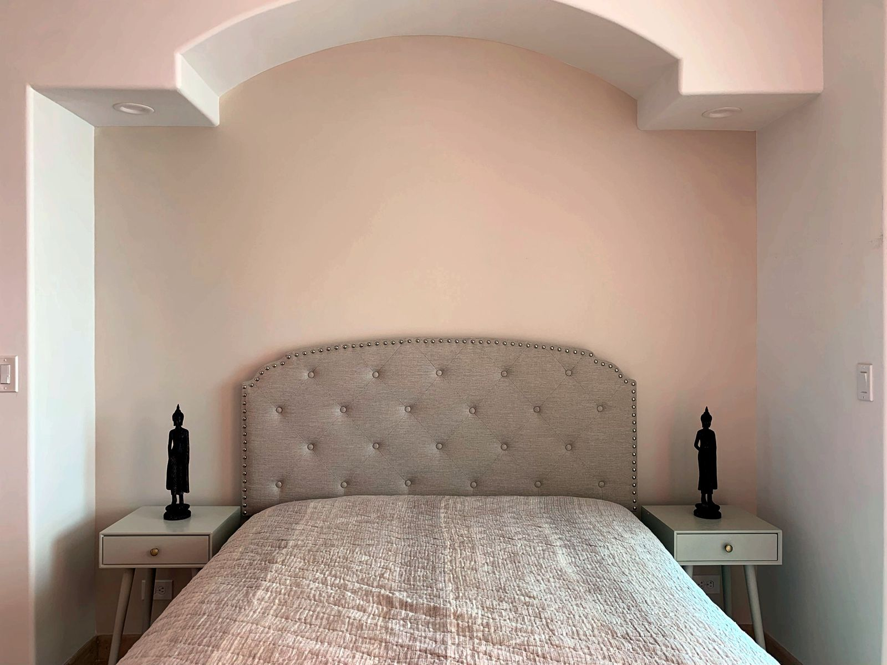

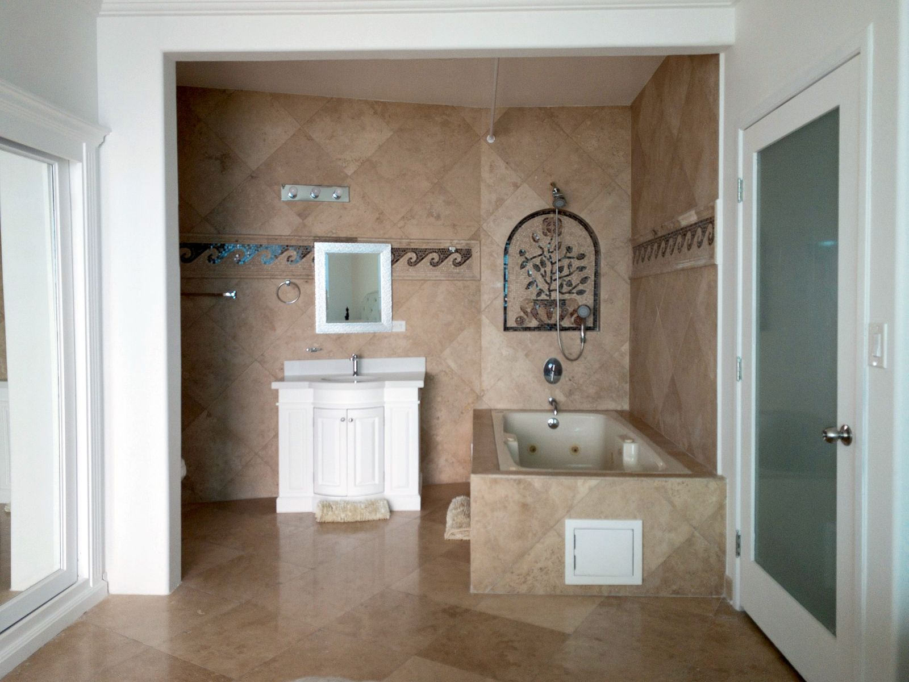
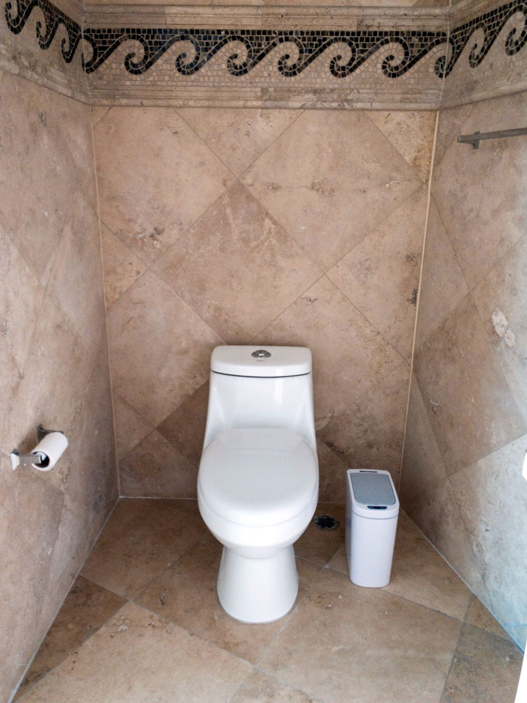
An arched front door and wide travertine hallways with crown moulding and a hand-laid mosaic.

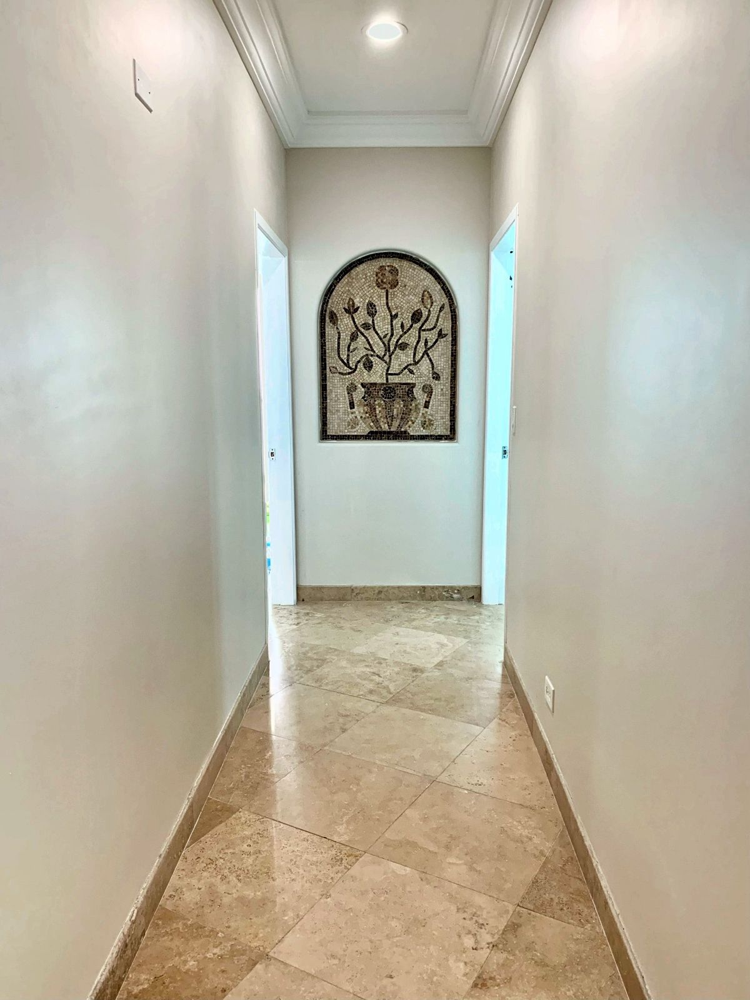
Private showings by appointment. Ask about the unit, the building or the purchase process in Mexico.
RealtorPerla Espinoza · PD Realty
Mobile+52 661 195 1683
Emailpdrealtyservice@gmail.com
Websitewww.pdrealty.com.mx